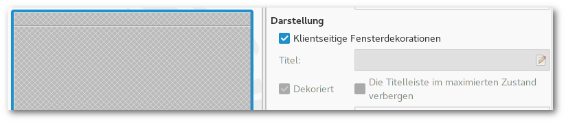

NoN: Konsoledierung
Knights of Ni - jetzt wird's schick
Einmal eingerichtet, benötigt man für das Befeuern einer Nikola-angetriebenen Seite nur einen Dateimanager, einen Editor, ein Terminal und normalerweise zwei Kommandos.
Und weil ich es gern bequem habe, habe ich mir etwas Unterstützung dafür gebastelt.
Was bisher geschah
Die per Button aufgerufenen Nikola-Kommandos wurden bisher folgendermaßen verarbeitet:
- nikola build lief im Hintergrund als subprocess.run(cmd)
- nikola github_deploy wurde im separaten Terminalfenster ausgeführt; dieses wurde nach der erfolgreichen Ausführung wieder geschlossen
Und das soll jetzt alles vorbei sein?
Neu ist immer besser.
—Barney Stinson
Die Oberfläche ist nun per Gtk.Stack zweigeteilt. Per Gtk.StackSwitcher in der Headerbar lässt sich zwischen der normalen Oberfläche und einem Terminal hin- und herwechseln.
Dies hat mehrere Eigenschaften und Vorteile:
- Das Teminal öffnet sich im aktuellen Verzeichnis der Nikola-Instanz.
- Das Terminal kann beliebig verwendet werden.
- Beim exit wird es nur resettet.
- build und github_deploy werden in diesem Terminal ausgeführt, wenn sie über die Oberfläche (Buttons) gestartet werden.
- Beim Ausführen über die Buttons wechselt der Focus auf das Terminal und nach Beenden des Tasks wieder zurück zur Oberfläche. Mit super Überblende (aktivierte Animationen erforderlich)!
- Optisch aufgeräumter, da kein separates Fenster mehr benötigt wird.

Mediaplayer mit VLC
Inhalt
Mediaplayer mit LibVLC realisieren
VLC ist nicht nur ein Multimediaplayer, sondern auch ein Framework, zu dem Python-Bindings verfügbar sind. In diesem Beispiel wird analog zum GStreamer-Artikel ein einfacher Mediaplayer mittels LibVLC umgesetzt.

LibVLC
Voraussetzung für die Verwendung ist die Installation der Python-Bindings. Diese sind unter der Paketbezeichnung python-vlc zu finden.
Glade
- Darstellungsbereich der Mediendatei: Widget Gtk.DrawingArea
- Steuerungselemente: Vor-/Zurückspulen (Gtk.Button), Pause (Gtk.Togglebutton)
- Medienauswahl: Buttons, um Video- oder Bilddatei anzuzeigen
- Playback manipulieren: Buttons zum Stummschalten und Drehen des Videos
Python
Player einrichten
Der VLC-Player wird initiiert, sobald das dazugehörige Widget, in diesem Fall also Gtk.DrawingArea gezeichnet wird. Dazu wird das Signal realize genutzt, das grundsätzlich für die Klasse der Widgets verfügbar ist.
vlcOptions = "--no-xlib" win_id = widget.get_window().get_xid() setup_player(vlcOptions) vlcInstance = vlc.Instance(options) player = vlcInstance.media_player_new() player.set_xwindow(win_id)
Als Optionen können Kommandozeilenoptionen von VLC übergeben werden. Im Beispiel wird beim Klick auf den "Rotate"-Button das Bild um 180° gedreht. Der Player wird erneut initiiert und die zusätzliche Option --video-filter=transform{type=180} übergeben.
Medium abspielen
Wie auch der GStreamer-Player kann der VLC-Player viele Video-/Audio- oder Bild-Formate anzeigen bzw. abspielen.
player.set_mrl(file_url) # Datei abspielen player.play() # Pause/Play-Schalter player.pause()
Positionsanzeige
Die Umsetzung des Fortschrittsbalkens und die Nutzung als Schiebereglers gestaltet sich ziemlich einfach.
# Position abfragen player.get_position() # Position bestimmen player.set_position(val)
Der Wertebereich liegt dabei zwischen 0 und 1. Das Problem bei diesen Funktionen ist, dass sie relativ ressourcenintensiv arbeiten und das Playback mitunter verruckelt ist. Die Lösung im hiesigen Beispiel besteht darin, get_position-Abfragen zu umgehen, indem die Regler-Position herangezogen wird.
Möglichkeiten und Limitierungen
Die Nutzung der LibVLC-Python-Bindings erweist sich als einfach und angesichts der GStreamer-Umsetzung als geradezu intuitiv. Auch das "Headerbar-Problem" besteht nicht.
Auf der anderen Seite greift man hier auf großes Projekt zurück, man muss VLC und die Python-Bindings installiert haben anstatt einfach das GStreamer-Modul aus dem GObject Introspection-Repository zu verwenden. Auch ist im Test der Ressourcenverbrauch von VLC gegenüber GStreamer größer.
Mediaplayer mit GStreamer
Inhalt
Mediaplayer mit GStreamer 1.x realisieren
GStreamer ist ein Multimedia-Framework, das zum Anzeigen und (De-)Kodieren von Mediendateien verwendet werden kann.

Glade
- Darstellungsbereich der Mediendatei: Widget Gtk.DrawingArea
- Steuerungselemente: Vor-/Zurückspulen (Gtk.utton), Pause (Gtk.Togglebutton)
- Medienauswahl: Buttons, um Video- oder Bilddatei anzuzeigen
Python
Player einrichten
Elemente und Pipelines
GStreamer handhabt alle möglichen Arten von Medienflüssen. Jeder Schritt in dieser Verarbeitungskette wird per Element definiert und in Pipelines verbunden. Eine solche Pipeline besteht typischerweise aus "source"-, "filter"-/"decode"- und "sink"-Elementen.
------------------------------------------------------ | Pipeline | | | | ------------- ---------------- -------------- | | | source | | filter | | sink | | | | |->>| decoder |->>| | | | | Quelle | | Verarbeitung | | Ausgabe | | | ------------- ---------------- -------------- | ------------------------------------------------------
Nach diesem Prinzip wird dies mittels Gst-Modul umgesetzt:
# init Gst and create pipeline Gst.init() pipeline = Gst.Pipeline() # create elements src = Gst.ElementFactory.make("filesrc", "source") decode = Gst.ElementFactory.make("decodebin", "decode") sink = Gst.ElementFactory.make("xvimagesink") # configure elements src.set_property("location", file_location) # add elements to pipeline pipeline.add(src) pipeline.add(decode) pipeline.add(sink) #link elements together src.link(decode) decode.link(sink)
Fertige Pipelines
Es besteht auch beispielsweise die Möglichkeit, Audio- und Videosignale voneinander getrennt werden, indem jeweils ein "videosink" und ein "audiosink" erstellt usw. Auf der anderen Seite gibt es vorgefertigte Pipelines für Standardaufgaben wie etwa das Abspielen von Medien. Ein solches Element ist "playbin", das den Code signifikant vereinfacht:
Gst.init(None) player = Gst.ElementFactory.make("playbin", "player") sink = Gst.ElementFactory.make("xvimagesink") player.set_property("uri", uri_of_file) player.set_property("video-sink", sink)
Und los!
Eine Pipeline oder ein "playbin"-Element können nun über Gst.STATE gesteuert werden:
player.set_state(Gst.State.PLAYING) player.set_state(Gst.State.PAUSED)
Fortschrittsanzeige
Die Fortschrittsanzeige ist an dieser Stelle keine Gtk.ProgressBar sondern eine horizontale GtkScale. Mit diesem Widget lässt sich nicht nur eine Position anzeigen, sondern auch per Maus setzen. Für letzteres wird das Signal value-changed benötigt. Streng genommen ist das Signal change-value an dieser Stelle die sauberere Lösung, die im nachfolgenden Beitrag zur Umsetzung des Mediaplayers mit LibVLC verwendet wird.
Möglichkeiten und Limitierungen
Bei der Einarbeitung in GStreamer stolpert man (an dieser Stelle generalisiert die Autorin weitgehend und möglicherweise unbegründet) über diverse Hürden:
Es gibt eine Reihe von Tutorials. Die Umsetzung wird durch zwei Umstände erschwert:
- Die primäre Sprache von und mit GStreamer ist C. Mit Python steht man eher auf experimentellem Boden.
- Durch die Versionssprünge sowohl bei GStreamer (von 0.10 auf 1.x) als auch Python (2.x auf 3.x) funktionieren viele ältere Anleitungen nicht mehr ohne weiteres.
Es gibt weiterhin Effekte, die sich nicht erschließen. Das in diesem Artikel aufgeführte Beispiel funktioniert nicht, wenn das Fenster eine Headerbar enthält. Des Weiteren ist die Videodarstellung unter Wayland fehlerhaft (Audio läuft). Beide Probleme sind mit der Verwendung von "gtksink" lösbar.
GPT: v0.4 Release
JFTR: v0.4 des GoProTools veröffentlicht
Das GoProTool hat ein wenig Zuneigung bekommen. In diesem Zuge habe ich aus dem aktuellen Stand den Release v0.4 "scarlatina" erstellt.
NEU:
- Import von jedem Verzeichnis aus (vorher nur von erkannten Speicherkarten) mit praktischen Buttons in der Toolbar
REPARIERT:
- Ordnerauswahl beim Import
- Fortschrittsanzeige bei Videoimport
"REPARIERT":
- Headerbar in der Vorschau-Version entfernt, weil Bild bei Playback nur funktioniert, wenn das Fenster keine Headerbar enthält (fragt nicht - isso, weil isso)
Bemerkung
Dies wird voraussichtlich beim Wechsel von GStreamer zu LibVLC behoben, siehe auch LibVLC-Artikel.

Das Konfigurationssystem GSettings
Inhalt
Das GNOME-eigene Konfigurationssystem GSettings
GSettings ist GNOMEs zentrales Konfigurationssystem für Anwendungen. Es ist die Schnittstelle für verschiedenmögliche Backends, gemeinhin ist dies dconf.
Mittels grafischem (dconf-editor) oder Kommandozeilentool (gsettings) lassen sich Konfigurationen abfragen und manipulieren.
Das folgende Beispiel kann Hintergrundbilder laden, festlegen und bookmarken/favorisieren.

Schemas
Um eine Konfiguration für eine Anwendung zu erstellen, muss diese in einer Schema-Datei definiert werden. Diese Datei ist eine XML-formatierte Datei, die anschließend in sein maschinenlesbares Äquivalent überführt werden muss.
Ein Beispiel für eine Schema-Datei mit einer festzulegenden Eigenschaft (key) wäre etwa:
<schemalist> <schema id="org.gtk.Test" path="/org/gtk/Test/"> <key name="string-key" type="s"> <default>""</default> <summary>A string</summary> <description> Configuration key defined for a string. Default value is set to an empty string. </description> </key> </schema> </schemalist>
Die Dateibenennung folgt der Vorgabe "schema.id.gschema.xml". Das Standardinstallationsverzeichnis für Schema-Dateien ist /usr/share/glib-2.0/schemas. Schema-Dateien können auch außerhalb dieses Verzeichnisses genutzt werden (z.B. lokal, zu Testzwecken), sie werden dann aber nicht vom dconf-editor angezeigt.
Die erforderliche Kompilierung erfolgt mit
$ glib-compile-schemas /path/to/schema/files/ $ # default directory $ glib-compile-schemas /usr/share/glib-2.0/schemas/
Die kompilierte und nun von GSettings verwendete Datei ist gschemas.compiled.
Glade
Das Beispiel soll Bilder anzeigen, dafür wird das Widget GtkImage benötigt. Alle Steuerungselemente werden in der Headerbar untergebracht:
- "Open File"-Button: öffnet einen FileChooserDialog
- Switch: schaltet Desktop-Icons an oder ab
- "Fav"-Togglebutton: bookmarkt angezeigte Dateien, zeigt an, ob angezeigte Datei als Favorit markiert ist
- "Set as wallpaper"-Button: angezeigte Datei als Hintergrundbild verwenden
- MenuButton: unterhalb des Buttons wird eine Liste der favorisierten Dateien angezeigt, die von dort aus aufgerufen werden können
Python
Globales Schema laden
Eine bestehende Konfiguration zu laden, geschieht einfach per
setting = Gio.Settings.new("full.schema.path") # load desktop background configuration setting = Gio.Settings.new("org.gnome.desktop.background")
Lokales Schema laden
Bei einem lokal gespeicherten Schema muss der Ort der schemas.compiled angegeben werden, bevor die Konfiguration geladen werden kann:
schema_source = Gio.SettingsSchemaSource.new_from_directory(os.getcwd(), Gio.SettingsSchemaSource.get_default(), False) schema = Gio.SettingsSchemaSource.lookup(schema_source, "org.example.wallpaper-changer", False) setting = Gio.Settings.new_full(schema, None, None)
Widget verknüpfen
Es ist möglich, GSettings-Eigenschaften direkt an Widgets zu binden. Diese können dann bidirektional Zustände anzeigen bzw. man kann Änderungen an ihnen vornehmen:
setting.bind("setting-key", widget, property, Gio.SettingsBindFlags...)
Im Beispiel wäre dies also
self.bg_setting.bind("show-desktop-icons", self.obj("switch"), "active", Gio.SettingsBindFlags.DEFAULT)
Der Schalter zeigt beim Start die aktuelle Einstellung an. Eine Änderung des Status ist sofort wirksam.
Werte abrufen und festlegen
Eigenschaften können mit get_"type" und set_"type" ermittelt und festgelegt werden. Die relevante Funktion ist vom festgelegten Schlüsseltyp abhängig, also get_string und set_string für Zeichenketten, get_int und set_int für Ganzzahlen usw. (siehe PyGObject API Reference).
Wird der Wert einer Eigenschaft per get_value(key) abgefragt, wird dies immer als Wert des Typs GLib.Variant zurückgegeben. Entsprechend erwartet die Funktion set_value(key) ebenfalls diesen Typ.
Die Inhalte dieser Werte lassen sich einfach in simple Datentypen konvertieren, z.B.
# return string setting.get_value(key).get_string() # return anything (list, string, bool etc.) setting.get_value(key).unpack()
Umgekehrt lassen sich reguläre Datentypen nach folgendem Muster als GLib.Variant-Typ ausdrücken und an GSettings übergeben:
setting.set_value(key, GLib.Variant(string_type, value)
Eine Liste der verfügbaren Stringtypen finden sich in der GNOME Developer-Dokumentation.
Im Beispiel wird auf diese Art die Favoritenliste aktualisiert:
app_setting.set_value("favourites", GLib.Variant("as", fav_list))
Listings
Schema
org.example.wallpaper-changer.gschema.xml (Source)
<?xml version="1.0" encoding="utf-8"?> <schemalist> <schema path="/org/example/wallpaper-changer/" id="org.example.wallpaper-changer"> <key name="favourites" type="as"> <default>[]</default> <summary>List of favourite wallpapers</summary> <description> Add or remove entry by pressing the 'fav' toggle button. </description> </key> </schema> </schemalist>
Python
#!/usr/bin/python # -*- coding: utf-8 -*- import os import sys import gi gi.require_version("Gtk", "3.0") from gi.repository import Gtk, Gio, GLib, GdkPixbuf class Handler: def on_window_destroy(self, window): window.close() def on_dialog_close(self,widget, *event): widget.hide_on_delete() return True def on_filechooser_dialog_response(self, widget, response): if response == 1: self.on_dialog_close(widget) elif response == 0: app.uri = widget.get_filename() app.draw_pixbuf(app.uri) app.handle_fav(app.uri) self.on_dialog_close(widget) def on_filechooser_dialog_file_activated(self, widget): self.on_filechooser_dialog_response(widget, 0) def on_open_button_clicked(self, widget): app.obj("filechooser_dialog").show_all() def on_setwp_button_clicked(self, widget): app.bg_setting.set_string("picture-uri", "file://{}".format(app.uri)) def on_window_size_allocate(self, widget, size): app.draw_pixbuf(app.uri) def on_filechooser_dialog_update_preview(self, widget): if widget.get_filename() != None and os.path.isfile(widget.get_filename()): pixbuf = GdkPixbuf.Pixbuf.new_from_file_at_scale(widget.get_filename(),200, 200, True) app.obj("preview").set_from_pixbuf(pixbuf) def on_fav_button_toggled(self,widget): if widget.get_active(): #add file to fav_list if not in list if app.uri not in app.fav_list: app.fav_list.append(app.uri) else: #remove file from fav_list if in list if app.uri in app.fav_list: app.fav_list.remove(app.uri) #update GSettings entry for favourites app.app_setting.set_value("favourites", GLib.Variant("as", app.fav_list)) #update fav list in popup menu popup = app.obj("menu") #remove all items for i in popup.get_children(): popup.remove(i) #reload all items from fav_list for fav in app.fav_list: #only label menuitem with filename instead of path item = Gtk.MenuItem(os.path.split(fav)[1]) item.connect("activate", self.on_choose_fav_from_menu, fav) popup.append(item) popup.show_all() def on_choose_fav_from_menu(self, widget, filename): app.uri = filename app.draw_pixbuf(filename) app.handle_fav(filename) class ExampleApp: def __init__(self): self.app = Gtk.Application.new("org.application.test", Gio.ApplicationFlags(0)) self.app.connect("activate", self.on_app_activate) self.app.connect("shutdown", self.on_app_shutdown) def on_app_activate(self, app): builder = Gtk.Builder() builder.add_from_file("17_gsettings.glade") builder.connect_signals(Handler()) self.obj = builder.get_object #load existing GSettings application config self.bg_setting = Gio.Settings.new("org.gnome.desktop.background") #get_value returns Gio formatted file path file = self.bg_setting.get_value("picture-uri") #convert path into string self.uri = file.get_string()[7:] #bind GSettings key to GTK+ object self.bg_setting.bind("show-desktop-icons", self.obj("switch"), "active", Gio.SettingsBindFlags.DEFAULT) #add GSettings schema from compiled XML file located in current directory (only recommended for test use, standard location: /usr/share/glib-2.0/schemas/) schema_source = Gio.SettingsSchemaSource.new_from_directory(os.getcwd(), Gio.SettingsSchemaSource.get_default(), False) schema = Gio.SettingsSchemaSource.lookup(schema_source,"org.example.wallpaper-changer", False) self.app_setting = Gio.Settings.new_full(schema, None, None) #convert value (GLib.Variant) into native list self.fav_list = self.app_setting.get_value("favourites").unpack() self.obj("window").set_application(app) self.obj("window").show_all() self.draw_pixbuf(self.uri) self.handle_fav(self.uri) def draw_pixbuf(self,file): size=self.obj("image_area").get_allocation() pixbuf = GdkPixbuf.Pixbuf.new_from_file_at_scale(file, size.width, size.height, True) self.obj("image_area").set_from_pixbuf(pixbuf) def handle_fav(self,uri): #set toggle button to correct state if uri in self.fav_list: self.obj("fav_button").set_active(True) else: self.obj("fav_button").set_active(False) def on_app_shutdown(self, app): self.app.quit() def run(self, argv): self.app.run(argv) app = ExampleApp() app.run(sys.argv)
Glade
<?xml version="1.0" encoding="UTF-8"?> <!-- Generated with glade 3.20.0 --> <interface> <requires lib="gtk+" version="3.20"/> <object class="GtkFileFilter" id="filefilter"> <mime-types> <mime-type>image/*</mime-type> </mime-types> </object> <object class="GtkImage" id="image1"> <property name="visible">True</property> <property name="can_focus">False</property> <property name="icon_name">emblem-favorite</property> </object> <object class="GtkMenu" id="menu"> <property name="visible">True</property> <property name="can_focus">False</property> </object> <object class="GtkApplicationWindow" id="window"> <property name="can_focus">False</property> <signal name="destroy" handler="on_window_destroy" swapped="no"/> <signal name="size-allocate" handler="on_window_size_allocate" swapped="no"/> <child> <object class="GtkImage" id="image_area"> <property name="width_request">400</property> <property name="height_request">300</property> <property name="visible">True</property> <property name="can_focus">False</property> <property name="stock">gtk-missing-image</property> </object> </child> <child type="titlebar"> <object class="GtkHeaderBar"> <property name="visible">True</property> <property name="can_focus">False</property> <property name="title">Wallpaper changer</property> <property name="has_subtitle">False</property> <property name="show_close_button">True</property> <child> <object class="GtkButton" id="open_button"> <property name="label" translatable="yes">Open file...</property> <property name="visible">True</property> <property name="can_focus">True</property> <property name="receives_default">True</property> <signal name="clicked" handler="on_open_button_clicked" swapped="no"/> </object> </child> <child> <object class="GtkBox"> <property name="visible">True</property> <property name="can_focus">False</property> <property name="orientation">vertical</property> <child> <object class="GtkLabel"> <property name="visible">True</property> <property name="can_focus">False</property> <property name="label" translatable="yes">Desktop icons</property> </object> <packing> <property name="expand">False</property> <property name="fill">True</property> <property name="position">0</property> </packing> </child> <child> <object class="GtkSwitch" id="switch"> <property name="visible">True</property> <property name="can_focus">True</property> </object> <packing> <property name="expand">False</property> <property name="fill">True</property> <property name="position">1</property> </packing> </child> </object> <packing> <property name="position">2</property> </packing> </child> <child> <object class="GtkMenuButton" id="fav_menu"> <property name="visible">True</property> <property name="can_focus">True</property> <property name="receives_default">True</property> <property name="popup">menu</property> <child> <placeholder/> </child> </object> <packing> <property name="pack_type">end</property> <property name="position">1</property> </packing> </child> <child> <object class="GtkButton" id="setwp_button"> <property name="label" translatable="yes">Set as wallpaper</property> <property name="visible">True</property> <property name="can_focus">True</property> <property name="receives_default">True</property> <signal name="clicked" handler="on_setwp_button_clicked" swapped="no"/> </object> <packing> <property name="pack_type">end</property> <property name="position">3</property> </packing> </child> <child> <object class="GtkToggleButton" id="fav_button"> <property name="visible">True</property> <property name="can_focus">True</property> <property name="receives_default">True</property> <property name="image">image1</property> <property name="always_show_image">True</property> <signal name="toggled" handler="on_fav_button_toggled" swapped="no"/> </object> <packing> <property name="pack_type">end</property> <property name="position">3</property> </packing> </child> </object> </child> </object> <object class="GtkImage" id="preview"> <property name="width_request">200</property> <property name="visible">True</property> <property name="can_focus">False</property> <property name="margin_right">5</property> </object> <object class="GtkFileChooserDialog" id="filechooser_dialog"> <property name="width_request">800</property> <property name="height_request">600</property> <property name="can_focus">False</property> <property name="type_hint">dialog</property> <property name="transient_for">window</property> <property name="attached_to">window</property> <property name="filter">filefilter</property> <property name="preview_widget">preview</property> <property name="use_preview_label">False</property> <signal name="delete-event" handler="on_dialog_close" swapped="no"/> <signal name="file-activated" handler="on_filechooser_dialog_file_activated" swapped="no"/> <signal name="response" handler="on_filechooser_dialog_response" swapped="no"/> <signal name="update-preview" handler="on_filechooser_dialog_update_preview" swapped="no"/> <child internal-child="vbox"> <object class="GtkBox" id="fcbox"> <property name="can_focus">False</property> <property name="orientation">vertical</property> <child internal-child="action_area"> <object class="GtkButtonBox"> <property name="can_focus">False</property> <child> <placeholder/> </child> </object> <packing> <property name="expand">False</property> <property name="fill">False</property> <property name="position">0</property> </packing> </child> </object> </child> <child type="titlebar"> <object class="GtkHeaderBar"> <property name="visible">True</property> <property name="can_focus">False</property> <property name="title">Choose image file</property> <property name="show_close_button">True</property> </object> </child> </object> </interface>
Herdentrieb
Mastodon - get hype
Warnung
Dieser Beitrag wird bedarfs- und kapazitätsabhängig aktualisiert. Da sich Mastodon in massiver, aktiver Entwicklung befindet, können Teile des Inhaltes veraltet sein.
Inhalt
Was bisher geschah
Mastodon ist ein freies, verteiltes soziales Netzwerk und gleichzeitig der Name dessen Server-Komponente. Ein Mastodon-Server innhalb des gesamten Netzwerkes (Fediverse) ist eine Instanz. Die Nutzung lehnt sich im Wesentlichen an Twitter an: ein Post (Toot, dt. Tröt) enthält bis zu 500 Zeichen, die wiederum favorisiert und erneut geteilt (Boost) werden können, es gibt das Follower-Prinzip und diverse Timelines (Nutzer, lokal, öffentlich).
Was passiert gerade?
Ein junges, Open-Source-Netzwerk zieht naturgemäß primär technikaffines Volk an, gefolgt von den üblichen Early Adopter-Kandidaten. Das führt derzeit in eine inhaltliche Mischung aus Tech-Themen, darunter viel, was sich um Mastodon selbst dreht, Rollenspiele, Manga, Furries, NSFW-Content und lahme SJW-Ansprachen.
Wer bis jetzt noch nicht abgeschreckt ist, fragt sich:
Welche Instanz ist die richtige für mich?

Da prinzipbedingt jeder einen Mastodon-Server betreiben kann, tun dies auch viele. So explodiert aktuell die Zahl der Instanzen. Aber es ist eben auch damit zu rechnen, dass die Mehrheit nur kurzfristig aus Experimentierfreude existieren wird. Verschwindet eine Instanz, verschwinden auch alle Accounts (und deren Inhalte) in dieser.
Ein weiterer Punkt ist die Ausrichtung der Instanz, sei sie themenbezogen (Spaß/Memes/Aktivismus/Tech) oder lokal/landessprachlich oder der Grad an Moderation.
Hier zeichnet sich gerade eine Art Sortierungsbewegung ab: Benutzer migrieren zu Instanzen, die eher ihren Interessen bzw. ihrem Umfeld entsprechen.
Bisher ist es nicht möglich, die lokale Timeline einer Instanz ohne Registrierung anzusehen und man hier nahezu die Katze im Sack kauft. Jüngst gibt es aber Abhilfe unter

{kind=link}
Wenn man also nicht genau eine Instanz favorisiert, weil sie thematisch passt oder man dort schon Nutzer kennt, sucht man sich am besten eine größere, allgemeine Instanz aus, bei der eine größere Chance besteht, die erste Euphoriewelle zu überleben.
Wichtiger Hinweis
Accounts können zur Zeit nicht gelöscht werden. Auch können Accounts nicht in andere Instanzen migriert werden. Es ist zwar möglich, eine Liste der Accounts, denen man selbst folgt, zu exportieren und in neue Accounts zu importieren, dies funktioniert aber nicht für Follower.
Okay, ich bin dabei, was muss ich tun?
Hashtags
Tags sind die (aktuell) beste Art, bei Mastodon nach Stichwörtern zu suchen. Entweder sucht man direkt in der Suchleiste in der linken Spalte oder man ruft die URL <instance>/tags/<tag> auf. In den Suchergebnissen werden auch Beiträge anderer Instanzen angezeigt, dies erfolgt aber nicht kongruent, man vergleiche beispielsweise den Tag #bicycle auf
User-Feed
Für jeden Nutzer wird ein Atom-Feed bereitgestellt. Leider gibt es dies nicht für Tags.
Klingt irgendwie nicht nach dem großen Twitter-Killer
Korrekt, ist es möglicherweise auch nicht. Man merkt dem Projekt definitiv an, dass es noch in den Kinderschuhen steckt. Es ist recht aufwändig, sich nach Inhalten und Usern umzusehen.
Das erinnert mich ein wenig an den "Facebook-Killer" Google+, als soziales Netzwerk hat es seine Nische gefunden, aber gerade große Medien, Blogger und die egomane Twitter-"Elite" haben die Funktionsweise von G+ nie verstanden (und wollten das auch größtenteils nicht). Damit will ich die Versäumnisse und das akkurate und stete Verschlimmbessern der Plattform seitens Google in keiner Weise in Schutz nehmen.
Find mich auf Mastodon
Google+
Diskussion und Kommentare? Folgen Sie mir unauffällig.
BeeLine - erster Eindruck
Inhalt
Navigationskompass

BeeLine in Betrieb mit Richtungs- und Entfernungsanzeige
BeeLine ist im weitesten Sinne ein Fahrradnavi. Das Konzept des BeeLine ist, dass es keine Route, sondern wie eine Kompassnadel die Richtung des Ziels bzw. eines Wegpunktes und dessen Entfernung (engl. beeline) anzeigt. Ist das BeeLine gerade nicht mit dem Telefon gekoppelt, zeigt die "Nadel" auch tatsächlich nach Norden. Dieser Prämisse folgend wird dem Nutzer die Streckenwahl komplett überlassen und so wird es auch beworben:
"BeeLine is built for everyday adventuring. After all, where’s the fun in being told exactly what to do?
Take back control of your ride and explore your city with BeeLine."
Technikgeraffel
BeeLine
Das Gerät verfügt über einen internen Akku, der etwa 30 Stunden im Betrieb halten soll. Das E-Ink-Display ist energiesparend, wetterfest und sonnenlichtverträglich, für den Nachtbetrieb gibt es eine zuschaltbare Beleuchtung, die Bedienung erfolgt über die vier äußeren Touch-Tasten und die zugehörige App.
App

App: Zielauswahl
Nach der BeeLine-Anmeldung und dem Pairen des Gerätes per Bluetooth geht es los. Unter "Where to?" tippt man auf der Karte auf das Ziel und drückt den gelben "BeeLine"-Button. Alternativ wählt man unter "Destinations" ein Ziel aus, das sich auch speichern und wieder aufrufen lässt. Ziele mit dazwischenliegenden Wegpunkten kann man als Route speichern.
Die App verfügt auch über die Kompass-Ansicht des BeeLine, könnte also theoretisch auch ohne Gerät mit einer Lenkerhaltung genau so genutzt werden.

App: Kompassansicht
Fahrrad
BeeLine lässt sich durch das flexible Gummiband an diversen Stellen am Fahrrad befestigen. Die Ausrichtung lässt sich in der App um 90° drehen, so dass sowohl der Lenker als auch der Vorbau oder das Oberrohr als Befestigungspunkte in Frage kommen.

Befestigung am Vorbau
Die Befestigung erweist sich als wesentlich flexibler, stabiler und vertrauenswürdiger als etwa die Bike Citizens-Halterung, die ich für ziemlich ungelungen halte.
Sind wir schon da?
BeeLine visiert nun das Ziel an, die angezeigte Entfernung entspricht der Luftlinie.

App: aktueller Standort und Ziel
Da ich meist ohne E.T. unterwegs bin, gebietet es die Neugier, über unbekannte Wege zum Ziel abkürzen zu wollen. Das hat spontan bei mir nicht geklappt, ich musste wieder umkehren, aber immerhin weiß ich nun, dass es in Treptow das hier gibt:

Get hype
Blöderweise bin ich kein Einhornfan und finde den Hype darum inzwischen nur noch unkreativ bis peinlich (gilt nicht für Leute, die schon immer ein Herz für Einhörner hatten und nicht auf den fahrenden Zug aufgesprungen sind). Aber das Potential, beim Sichverfahren etwas Neues zu entdecken, ist definitiv gegeben.
Wird die Fahrt beendet, was nicht automatisch beim Erreichen des Zieles ist, wird diese in der App gespeichert.

App: beendete Routen werden gespeichert
Verbesserungspotential
Wegpunkte
Man kann irgendwie zwischen Wegpunkten switchen, man sieht auf dem Display aber nicht, bei welchem man gerade ist und offenbar kann man nur vorwärts "durchblättern". Das muss ich nochmal testen.
Fahrt versehentlich beenden
Mir ist es jetzt zweimal passiert, dass die Fahrt versehentlich beendet wurde und die Strecke auch nicht hinterher in der App unter "Rides" aufgeführt war. Ich glaube, da steckt mehr als nur ein Bedienungsfehler hinter, das muss ich ebenfalls nochmal genauer untersuchen.
Bedienung
Das Gerät verfügt über vier Touch-Buttons (N/S/E/W), die man aber eher so durchklickt. Es ist nicht ersichtlich, welche Funktionen dahinter stecken.
Routen importieren
Die App speichert die Route, es wäre also auch möglich, Routen zu importieren. Genial fände ich einen alternativen Navigationsmodus, der nach Strecke navigiert, dann hätte man gleichzeitig einen optisch ansprechenden Garmin-Ersatz, eine eierlegende Navi-Sau sozusagen.
Pros and Cons
| Pro | Contra |
|---|---|
| einfache Befestigung | Halterung birgt Gefahr der Materialermüdung, Ersatzhalterungen sollen zukünftig erhältlich sein |
| lange Akkulaufzeit | funktioniert nicht ohne App |
| minimalistische Navigation | minimalistische Navigation |
| optisch ansprechend | Preis-Leistungs-Verhältnis (115 Euro) |
| Display gut lesbar | |
| lenkt beim Fahren nicht ab | |
| verleitet dazu, neue Wege zu testen |
Dateiauswahldialog
Inhalt
FileChooserDialog
Der Gtk.FileChooserDialog ist eine Subclass von Gtk.Dialog (siehe Artikel zu Dialogen) und ermöglicht das Auswählen und Speichern von Dateien oder Ordnern.

Glade
Den Dialog findet man in der Widget-Seitenleiste oben unter "Oberste Ebene". Neben dem Dateibrowser besitzt er eine erweiterbare interne Gtk.Box für weitere Widgets sowie eine Gtk.ButtonBox als interne "action area" für Buttons.
Es ist erforderlich anzugeben, für welche Aktion der Dialog gedacht ist, was Gtk.FileChooserAction entspricht (siehe Python GI API Reference): Datei öffnen oder speichern, Ordner auswählen oder anlegen.
Action area und Responses
Responses sind Antwortkennungen, die beim Auslösen des Signals response übergeben werden. Buttons in der "action area" werden jeweils Response-Werte zugewiesen anstatt das clicked-Signal der Buttons zu nutzen (weitere Erklärungen dazu im Artikel zu Dialogen).
Standardmäßig wird die "action area" unter dem Dateibrowserbereich angelegt.

Verwendet man den FileChooserDialog ohne Glade (siehe unten), werden die Buttons in der Headerbar angezeigt. Letzteres sollte aber vermutlich der Standard sein, da es eine Warnung ausgegeben wird, die die Funktionalität des Dialogs allerdings nicht beeinträchtigt:
Gtk-WARNING **: Content added to the action area of a dialog using header bars
Diese Meldung wird nicht angezeigt, wenn man darauf verzichtet, in Glade Buttons zur intern action area hinzuzufügen. Dies betrifft auch andere Dialogarten.
Legt man nun in Glade eine Headerbar mit Buttons an, ist es standardmäßig nicht möglich, diesen Buttons Response-Werte zuzuweisen.
Dafür gibt es (mindestens) zwei Lösungsmöglichkeiten:
XML-Datei
Man legt die Headerbar mit Button(s) an, anschließend öffnet man die Glade-Datei in einem Texteditor und fügt dem Element <action-widgets> die entsprechenden Zeilen hinzu:
<object class="GtkFileChooserDialog" id="filechooser_dialog"> <property abc ></property> <property xyz ></property> <!-- usw. --> <action-widgets> <!-- Buttons innerhalb der action area --> <action-widget response="0">button1</action-widget> <action-widget response="1">button2</action-widget> <!-- Button in Headerbar --> <action-widget response="-1">hb_button</action-widget> </action-widgets> <!-- usw. --> </object>
Dies funktioniert zwar, ist aber ganz sicher nicht so gedacht, weil diese Änderung beim erneuten Bearbeiten der Glade-Datei wieder rückgängig gemacht wird.
add_action_widget-Funktion
Mit der Funktion add_action_widget können aktivierbare Widgets zur action area hinzugefügt und damit ebenfalls per response-Signal verarbeitet werden. Dies sind Widgets der Gtk.Activatable-Klasse und beinhaltet die Widgets Buttons, MenuItem, RecentChooserMenu, Switch und ToolItem.
Ein Button wird nach dem Schema
widget.add_action_widget(button, response)
hinzugefügt. Wichtig ist es, beim Button die Widget-Eigenschaft "can-default" zu aktivieren:
button.set_property("can-default", True)
Im Beispiel erhält der Dialog die beiden Standardbuttons "OK"/"Cancel":
button = Gtk.Button.new_with_label("Cancel") button.set_property("can-default", True) self.obj("filechooser_dialog").add_action_widget(button, Gtk.ResponseType.CANCEL) button = Gtk.Button.new_with_label("OK") button.set_property("can-default", True) self.obj("filechooser_dialog").add_action_widget(button, Gtk.ResponseType.OK)
Um die Dateiauswahl auch auf Doppelklick zu ermöglichen, wird neben des response-Signals noch das Signal file-activated benötigt.
Vorschau-Widget
Der Dialog besitzt die Option, ein Vorschau-Widget einzubinden. Dafür aktiviert man in den Dialog-Eigenschaften "Vorschau-Widget aktiv" und wählt unter "Vorschau-Widget" ein freies Widget (z.B. ein GtkImage). Möglicherweise muss man dieses Widget zunächst in ein leeres Container-Widget erstellen und dort in einen freien Bereich ziehen.
Wenn eine Aktualisierung der Vorschau angefordert wird, wird das Signal update-preview ausgelöst.
FileFilter
FileFilter dienen dazu, Dateien bestimmten Musters anzuzeigen. Pro Filter können mehrere (shell style glob) Patterns oder MIME-Types angegeben werden.
Den Filter findet man in Glade unter "Sonstiges". Im Dialog kann man in den allgemeinen Widget-Einstellungen den gewünschten Filter auswählen. Dies entspricht der set_filter-Funktion.
Python
Dialog ohne Glade
Der FileChooserDialog lässt sich auch ziemlich einfach ohne Glade realisieren, zudem lassen sich die oben genannten Probleme mit Buttons in der Headerbar vermeiden. Der Dialog wird nach folgendem Schema erstellt:
dialog = Gtk.FileChooserDialog(title="window title", parent=parent_window, action=file_chooser_action) dialog.add_buttons(button1, response1, button2, response2)
Der Dialog wird dann direkt aufgerufen und verarbeitet:
response = dialog.run() if response == response1: ... elif response == response2: ... dialog.destroy()
FileFilter
Es gibt zwei Möglichkeiten, einen Filefilter anzuwenden:
- Ohne Wahl. Der anzuwendende Filter ist voreingestellt:
dialog.set_filter(filter)
- Wahl per Dropdown-Menü: Der Nutzer kann zwischen mehreren vorgegebenen Filtern wählen:
dialog.add_filter(filter1) dialog.add_filter(filter2) ...
Desktopintegrationsbemühungen
Inhalt
Desktopintegration: Icon, Headerbar, Kommandozeilenoptionen
(Fortsetzung zum Artikel Gtk.Application)

Glade
Icon
Einem Fenster lässt sich direkt in Glade unter "Allgemein > Darstellung > Symboldatei" ein Icon auswählen. Das Problem dabei ist, dass Glade Bilddateien nur anzeigt, wenn sie sich im selben Verzeichnis wie die Glade-Datei selbst befinden, auch wenn man ein anderes Verzeichnis auswählt.
Am einfachsten behebt man dies, indem man die Gladedatei in einem Texteditor bearbeitet und den (relativen) Pfad zum Icon angibt. Diese Einstellung bleibt auch erhalten, wenn die Datei später wieder mit Glade bearbeitet und gespeichert wird:
<object class="GtkApplicationWindow" id="window"> ... <!-- <property name="icon">duckyou.svg</property> --> <property name="icon">../files/duckyou.svg</property> ...
Headerbar
Die Headerbar wurde mit GNOME 3.10 eingeführt und vereint Titelleiste und Toolbar in einem Widget, d.h neben Titel und Untertitel können rechts und/oder links verschiedene Widgets (Menüs, Buttons) angelegt sowie clientseitige Fensterkontrollknöpfe angezeigt werden.
Die Headerbar ist optional. Möchte man sie nutzen, muss in den Fenstereinstellungen "Allgemein > Darstellung > Klienseitige Fensterdekoration" ausgewählt werden. Daraufhin erscheint im oberen Bereich des Fensters ein reservierter Bereich, in dem die Headerbar platziert wird. Wird die Headerbar außerhalb davon platziert, wird weiterhin zusätzlich die normale Titelleiste angezeigt.
Kommandozeilenoptionen
Gtk.Application stellt die erforderlichen Mittel für anwendungseigene Kommandozeilenoptionen zur Verfügung (Handling command line options in GApplication).
Optionen anlegen
Verfügbare Optionen werden mit der Funktion add_main_option_entries(entrylist) hinzugefügt. Diese Einträge haben das Format GLib.OptionEntry, welches allerlei Parameter besitzt.
def __init__(self): self.app = Gtk.Application.new("org.application.test", Gio.ApplicationFlags(0)) self.app.add_main_option_entries([ self.create_option_entry("--version", description="Show version numbers and exit"), self.create_option_entry("--setlabel", description="Set label widget", arg=GLib.OptionArg.STRING,), self.create_option_entry("--bollocks", description="Additional test option - exit"), ]) def create_option_entry(self, long_name, short_name=None, flags=0, arg=GLib.OptionArg.NONE, arg_data=None, description=None, arg_description=None): option = GLib.OptionEntry() option.long_name = long_name.lstrip("-") option.short_name = 0 if not short_name else ord(short_name.lstrip("-")) option.flags = flags option.arg = arg option.arg_data = arg_data option.description = description option.arg_description = arg_description return option
Shortnames
Eine Option kann ein aus einem Buchstaben (oder besser gesagt "printable ASCII character different from ‘-‘") bestehenden Synonmym besitzen, den Shortname. Bei der Option --help ist dies gemeinhin -h.
Die short_name-Variable von OptionEntry ist allerdings integer. Die in der Dokumentation nicht ersichtliche Lösung besteht darin, in der Variable die Dezimalkodierung des entsprechenden Zeichens zu übergeben, also etwa 97 für "a". Bei ungültigen Werten wird eine Fehlermeldung ausgegeben. Optionen ohne Shortname erhalten den Wert 0.
Signal verbinden
Der Gtk.Application-eigene "handle-local-options"-Handler verarbeitet die Optionen. Sobald Optionen angelegt sind, wird dieses Signal noch vor dem "startup"-Signal ausgelöst
self.app.connect("handle-local-options", self.on_local_option)
Optionen verarbeiten
Die an die Handler-Funktion übergebene option ist ein Element der Klasse GLib.VariantDict. Mit contains("option") lässt sich nach der übergebenen Option suchen.
def on_local_option(self, app, option): if option.contains("option1"): #do something and exit normally return 0 elif option.contains("option2"): #do something different and exit return 0 elif option.contains("option3"): #do more and continue return -1
Ein übergebener String kann extrahiert werden, indem GLib.VariantDict mit end() in GLib.Variant konvertiert wird, das sich wiederum mit keys() auslesen lässt:
var = GLib.VariantDict.end(option) option_string = var[var.keys()[0]]
- Ein Return-Wert ist zwingend erforderlich, er entspricht dabei dem Exit-Status:
- -1: Anwendung wird weiter ausgeführt
- 0: erfolgreiche Ausführung, Anwendung wird beendet, "startup/activate" werden nicht ausgeführt
- 1 bzw. positiver Wert: nicht erfolgreiche Ausführung, Anwendung wird beendet
Optionen übergeben
Die Option, die immer verfügbar ist, ist --help. Hier werden unter "Anwendungsoptionen" die angelegten Optionen samt Beschreibung aufgeführt. Die Optionen können wie definiert angegeben werden:
$ python script.py --version Python: 3.6.0 GTK+: 3.22.6
oder mit --setlabel einen String an Gtk.Label übergeben:
$ python script.py --setlabel "I can haz options!"
Selbständig
Inhalt
Programm als Gtk.Application laufen lassen
Gtk.Application handhabt verschiedene wichtige Aspekte einer GTK+-Anwendung, wie etwa der GTK+-Initialisierung, dem Sessionmanagement und der Desktopintegration.

XML-Dateien
Glade
In Glade verändert sich im Prinzip nichts. Als Hauptfenster sollten Gtk.ApplicationWindows zum Einsatz kommen. Als Beispiel wird hier das Gladefile aus dem Artikel zu Dialogen wieder verwendet.
Python
Initialisierung von GtkApplication
Bei der Initialisierung wird eine application_id- und flags-Angabe benötigt. Letztere können in der Regel bei 0 bzw. FLAGS_NONE belassen werden (siehe Gio.ApplicationFlags), die Konventionen für die application_id sind hier dokumentiert.
Die Application kann nun mit verschiedenen Signalen verbunden werden, die zu bestimmten Ereignissen ausgelöst werden, aber es muss mindestens activate verbunden werden:
def __init__(self): self.app = Gtk.Application.new("org.application.test", 0) # self.app.connect("startup", self.on_app_startup) # optional self.app.connect("activate", self.on_app_activate) # self.app.connect("shutdown", self.on_app_shutdown) # optional def on_app_activate(self, app): # setting up GtkBuilder etc. ... ... ...
Starten und Beenden
GtkApplication übernimmt die Handhabung des GTK+-Mainloops, das heißt, es nicht mehr notwendig GTK+ manuell zu starten oder zu beenden. Stattdessen werden run() und quit() verwendet:
Gtk.main() -> app.run(argv) Gtk.main_quit() -> app.quit()
Beendet man das Programm über den [X]-Button oder den "Schließen"-Eintrag des Appmenus (immer vorhanden), wird automatisch das "shutdown"-Signal ausgelöst (siehe oben). Das heißt, es müssen keine entsprechenden Signale definiert werden. "Shutdown" wird auch ausgelöst, wenn es bei der Initialisierung nicht mit einer Funktion verbunden wird.